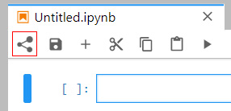
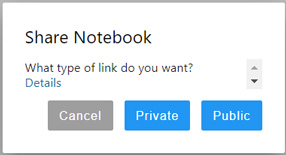
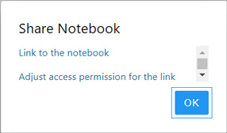
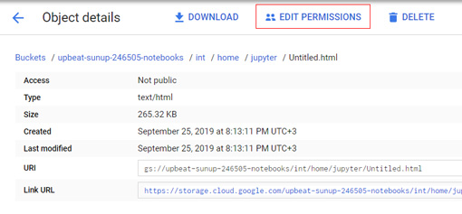

JupyterLab Extension For Sharing Notebooks
- Select the extension icon on the panel and click it when you want to share your notebook.

- Choose which type of link you want to receive: Public or Private. The public link will be available to all users while the private one is only for selected users.

- Now you can share the received link or configure access rights if you select a private link. In the latter case, select "Adjust access permission for the link", then in the window that opens, click on the "Edit Permissions".

